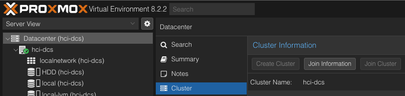

참고한 것들
배경
- 원래는 안하려 했다.
- 하지만 서버를 증설할 필요가 있었고, 이놈에 PVE 를 깔아서 PCI passthrough 로 원하는 SSD 를 VM 에 직접 붙여 개발환경을 구성하고싶어서
- 결국에 남는 iptime 공유기로 NAT 환경을 구성해야만 했다.
Router config
0. WAN config
- 서울대학교는 MAC 주소를 전달하고 IP 를 받아와 static IP 를 설정해야 한다.
- 따라서 iptime 의
Basic Setup->Internet Setup에서 static IP 를 설정해 준다.- GW 는
/24에.1로 설정하고 - DNS 는 (아마도 내부 DNS 인)
147.46.80.1로 설정한다.
- GW 는
1. DHCP static lease
- LAN node 에 static ip 를 할당하는 것을 netplan config 을 변경하는 방법보다는
- Router 에 DHCP static lease 를 설정해놓아 node 에다가는 그냥
dhcp: true으로 박아놓으면 편하기 때문에 그렇게 했다. - 방법은
Advanced Setup->Network->DHCP Server Setup에서 아래부분에Manual address에 원하는 노드의 IP:MAC 을 저장해 주었다.
2. Port-forward
- PVE UI 와 WireGuard 용 port-forward 를 뚫어주었는데
- 방법은 그냥
Advanced Setup->NAT/Routing->Port Forwarding으로 설정해 주면 된다.
3. Config save
- 우측상단에 저 연두색 버튼을 눌러 설정을 저장해야 한다.
- 주인장은 이거 안했더니 port-forward 가 안돼서 원인파악한다고 시간 꽤 날렸다.
PVE new node setup
Cluster

- Main node 에서
Datacenter->Cluster로 들어가Create Cluster만 해주면 된다. - 이 cluster 에 들어올 때는, main node 에서
Join information을 눌러 복사해준 뒤, join node 의 web 으로 들어가Join Cluster버튼을 누르고, 정보를 붙여넣기만 하면 된다.- 이때 join node 의 web 에서는 연결이 끊겨 화면이 멈춘 것처럼 보일 수 있다.
- Main node 에서 정상적으로 node 가 보인다면 join node 의 web 은 꺼주자.
NIC setup
- 그렇게 하고 PVE 를 새 node 에 설치해 준 뒤 (1) cluster 합류, (2) SDN 설정을 했는데 새 node 에서 인터넷이 안된다.
- 우선은
journalctl -xeu networking으로 보니까 NIC 을 찾을 수 없다고 한다.- 그래서 보니까
/etc/network/interfaces에 NIC 이름이 잘못 기입되어 있었다. - 근데 이건 내잘못은 아님; 저 파일은 자동생성되는 놈이다.
- 이게 근데 재부팅했을 때 종종 바뀐다. 어떻게 조치를 취해야 되긴 할듯
- 그래서 보니까
please reload 문제
- SDN 을 설정한 다음에
Apply버튼을 안누르면
local sdn network configuration is not yet generated, please reload
- 이건 보니까 SDN 에
Apply버튼을 눌러야 되더라. (참고)
NoVNC error
- VM 에 VNC 로 붙어보려고 하니까 이런 에러가 났다:
NoVNC error: Host Key verification failed (TASK ERROR: Failed to run vncproxy.)
- 이건 SSH host key verification 때문이다. 다음의 명령어를 node 에서 실행해 주면 잘 된다. (참고)
ssh -e none -o 'HostKeyAlias=server-b-name' root@server-b-ip-address /bin/true
그놈의 SDN
- 위 과정을 하니까 되긴 한다. 근데 (1) VM 에서 DHCP 가 안되고 (2) WireGuard 로 새로 추가한 node 의 VM 에 접근이 안된다.
- 보니까
- SDN 이 Simple mode 이다. Multi-node VM 간 통신을 위해서는 Simple 이 아니고 VLAN 이나 VXLAN 이어야 한다.
- 근데 DHCP 는 지금까지는 Simple 에서만 가능하다고 한다. (참조)
- 그냥 DHCP 없이 VLAN (+ VXLAN) 으로 static IP 로만 사용하려고 해도 뭐가 잘 안된다; 뭐 LXC container 생성하니 또 뭐가 안되고 어쩌고 피카추가 어쩌고 하면서 안된다.
- 그래서 Multiple Simple Zone 을 사용하기로 했다.